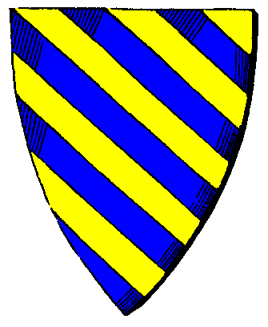

|

|
Das schwarze Brett
|
|
| Übersicht,
Anschläge und Stammtisch (RPG) |
|
Für Neulinge - Die Scherbenakademie Loh (45  ) )
|
Tattergreis
  |
LunaPark S.A.L - Die Scherbenakademie Loh - Ein Förderprogramm für Neue Scherbenbürger
Ihr seid neu auf der Scherbe? Ihr wollt die Scherbe eine Zeit lang in Ruhe bereisen, bebauen und die vielfältigen Möglichkeiten testen und kennen lernen? Dazu haben wir ein Neulings-Paket geschnürt, das die ersten Wochen auf der Scherbe erleichtern kann.
 Voraussetzungen: Ihr seid neu auf der Scherbe, nationslos, gebietslos, neutral und ohne Lehensherren|in Voraussetzungen: Ihr seid neu auf der Scherbe, nationslos, gebietslos, neutral und ohne Lehensherren|in
Wir bieten Euch: Siedlungsplatz für bis zu 3 Produktionsgebäude in unmittelbarer Stadtnähe. Ressourcen und Grundausstattung zum Bau und Betrieb der Produktionsgebäude. Wenn Euch die gewählten Berufe nicht zusagen, könnt Ihr jederzeit Eure Gebäude durch andere ersetzen und neue Produktionsketten ausprobieren.
Wir bieten Euch nicht: Nationszugehörigkeit oder Eintritt in eine Lehenskette. Ihr könnt die Scherbe frei und unabhängig kennen lernen.
Alles hat ein Ende: Ihr habt 10.000+ Ruhm gesammelt. Spätestens jetzt heisst es Abschied zu nehmen von der Scherbenakademie Loh. Wir gehen davon aus, dass Ihr die Scherbe nun besser kennt und erste Kontakte mit anderen Nationen, Reichen und Spielern geknüpft habt. Ihr verfügt nun auch über Grundkenntnisse der wirtschaftlichen Abläufe und der politischen Lage der Scherbe. Ihr könnt Euch somit an einem Ort Eurer Wahl eine eigene solide Existenz aufbauen.
Verpflichtungen: Für die Dauer Eurer Besiedlung im Gebiet von LunaPark S.A.L verpflichtet Ihr Euch, von allen kriegerischen und feindlichen Aktionen gegenüber anderen Spielern und deren Eigentum abzusehen.
Friede und langes Scherbenleben!
Tattergreis
Tattergreis,
Anführer der glorreichen Nation "Luna Park S.A.L"
Zur 5. Stunde am 79.Erntemond im Jahre 452 |
28.10.12 11:56
|
|
Agathe Wolfskopf
  |
*schaut auf den Anschlag nebenan*
Klingt ein bisschen wie die Stiftung der Sternenwölfe, nur an eine Stadt gebunden? Wäre es nicht geschickter, diese beiden Projekte zusammenzulegen?
Lady Agathe Wolfskopf,
Vorsteherin von Neskaya
Zur 19. Stunde am 80.Erntemond im Jahre 452 |
28.10.12 20:41
|
|
Lyra Callionymus
  |
Eine gute Idee! Aber was ist wenn Jemand 10000 Ruhm hat und Abschied nehmen muß? Müssen dann die Produktionsgebäude wieder abgerissen werden? Das wäre doch eine Verschwendung von Ressourcen.
Warum nicht innerhalb der Akademie Siedlungsplätze scherbenweit vermitteln, welche dann auch behalten werden dürfen?!
Lady Lyra Callionymus,
Vorsteherin von Atlantis,
Priesterin im Dienste des einzig wahren Glaubens an Bendur,
Anführerin der glorreichen Nation "Freie Walfänger",
Siegerin im Steinekullern 440 und 444
Zur 18. Stunde am 84.Erntemond im Jahre 452 |
29.10.12 18:51
|
|
Thor spinnt
  |
Ich begrüße jede Art der Unterstützung von neuen Scherblingen und hoffe für den Tattergreiß auf ehrbare Neulinge, für die anderen Anbietenden ebenfalls
Baron Utkorg vant Leefdaalhof,
Vorsteher von Akatharsia,
Verlobter der reizenden Kallisto
Zur 6. Stunde am 8.Dunkelfrost im Jahre 452 |
01.11.12 22:23
|
|
Tattergreis
|
Werte Lady Lyra Scherbenfussballpräsidentin, ja, es wird abgerissen. Dies werden die Mitbürger wohl tun, denn sein Scherbenleben als friedlicher akademischer Neulingshelfer zu verbringen ist für wenige eine interessante Aufgabe.
Ziel der S.A.L ist auch, dass neue Scherblinge Produktionsketten kennen lernen, um sich für das weitere Scherbenleben auf den passenden *Brotberuf* einzustimmen.
Daher ist die Möglichkeit, Gebäude zu bauen und wieder abzureissen, um neue Produktionswege zu probieren, Teil des Programms. Der Bedarf an Ressourcen ist für Neubauten von Gebäuden überschaubar gering und kann von der S.A.L gut getragen werden.
Ich erinnere mich noch an meine Zeit als Schürfzwerg, damals war es für mich unvorstellbar, nicht in tiefen Stollen zu schuften - heute geniesse ich mein Leben als Bauer und Holzfäller.
Sir Tattergreis,
Vorsteher von Nín Andúne,
Anführer der glorreichen Nation "Luna Park S.A.L"
Zur 2. Stunde am 21.Dunkelfrost im Jahre 452 |
04.11.12 22:26
|
|
| Farodan (RIP) |
Seid gegrüßt!
In diesem Fall muss ich Tattergreis beipflichten. In erster Linie sollen Scherbenneulingen die Produktionsstätten sowie die Scherbe näher gebracht werden. Somit geht leider teilweise der Abriss von Gebäuden mit einher...
Ich in meinem Fall kann jedoch über die Scherbenakademie kein schlechtes Wort verlieren. Ich habe dort eine sehr gute Starhilfe bekommen und selten einen so guten Informationsfluss gesehen.
Nach Absprache besteht sogar die Möglichkeit, auch wenn die 10.000 Ruhm erreicht sein sollten, bei Nín Andúne zu bleiben und die Stadt mit zu versorgen und weiter auszubauen.
So ist zumindest bei mir der Fall.
Nach einigem Testen der Produktionsgebäude, so denke ich, könnte dies ebenfalls, in gewissem Maße, eine Möglichkeit sein.
Sir Farodan
Zur 24. Stunde am 32.Saatmond im Jahre 453 |
28.11.12 17:06
|
|
Icke wieder
 |
Also sind 2 von 5 Punkten schon mal hinfällig.
Der Hintergrund einer Mentorenschaft ist es nun mal durch Lehenstreue & Zuwachs in den eigenen Reihen belohnt zu werden.
Alles andere empfände ich auch als undankbar. Schließlich steckt viel Zeit und Mühe in der Zuarbeit und meistens hilft man auch finanziell.
Wenn sich danach irgendwann herausstellt, dass die Politik zu lasch oder zu harsch ist, kann man sich immer noch im Guten verabschieden.
Oneiros unterstützt Plätze, die sich der Aus- und Fortbildung von Jungscherblingen kümmern. Wenn also mal Fragen zu einem Thema offen bleiben, dann meldet Euch bei mir.
Grüßle
Fürst Ottor Waefre,
Vorsteher von Oneiros
Zur 4. Stunde am 40.Saatmond im Jahre 453 |
30.11.12 9:08
|
|
Elrohir v. glänzenen Wolfstern
  |
Abgesehen von dem kleinen feinen Punkt:
Es ist OTTORS (und nicht DER) Hintergrund für eine Mentorenschaft - dies bedeutet nicht, dass dies allgemein gültig ist.
Die Sternenwölfe unterstützen z.B. OHNE auf Lehenstreue zu bestehen. Und Zuwachs in den eigenen Reihen gestatten wir sowieso nur denjenigen, die wir selber lange genug kennen.
Die Zuarbeit und das investierte Geld ist eine Frage des Sponsoring.
Meiner Meinung nach hat jeder Ansatz seine Existenzberechtigung - aber meine Intention ging nunmal in die Richtung, junge Scherblinge (oder alte Neubeginner) von anderen unabhängig zu machen und sich ein eigenes Bild von dem Leben (und Sterben) auf der Scherbe zu machen - mit allen einhergehenden Vor- und Nachteilen.
Ich freue mich aber auch über andere Helfer und sehe diese nicht als Konkurrenz, sondern als Ergänzung.
Baron Elrohir v. glänzenen Wolfstern,
Vorsteher von Wolfsmond,
Anführer der glorreichen Nation "Sternenwölfe",
Ehemann der reizenden Olivia v. glänzenen Wolfstern
Zur 24. Stunde am 41.Saatmond im Jahre 453 |
30.11.12 19:33
|
|
Don Boot
 |
Auch ich begrüße die Möglichkeit, um mich mal zu bedanken, für alles was mir an Hilfe am Anfang bisher zu Teil geworden ist.
Ein schöne Idee die geschaffen wurde.
Es bedankt sich Don Boot
Don Boot
Zur 23. Stunde am 32.Erntemond im Jahre 453 |
09.01.13 16:50
|
|
| Kalle Specklöffel (RIP) |
Die Scherbenakademie kann ich einem Jeden und einer Jeden empfehlen, die auf dieser Welt Fuß fassen möchte und noch keine richtige Vorstellung hat, in welche Richtung der eigene Weg gehen wird.
In der Scherbenakademie werden einem wichtiges grundwissen vermittelt und man kann dann selber auch einiges auprobieren und so seinen zukünftigen Weg entdecken.
Kalle Specklöffel
Zur 21. Stunde am 32.Dunkelfrost im Jahre 453 |
30.01.13 16:16
|
|
| Shagdreg (RIP) |
*Pssst* Tattergreis della Luna klingt nach einem guten Deal, ich suche noch den Haken an dem ich dan eventuell baumeln werde.
Shagdreg
Zur 3. Stunde am 16.Blumenmond im Jahre 454 |
09.03.13 18:29
|
|
Übersicht,
Anschläge und Stammtisch (RPG)
|
|
|
|